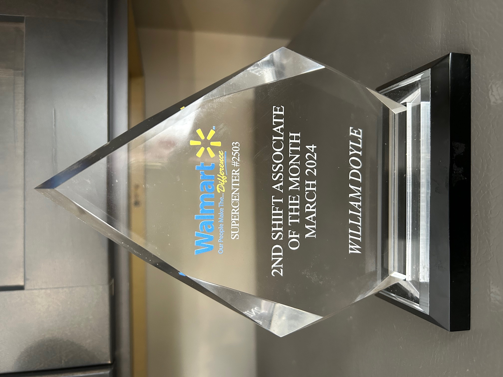
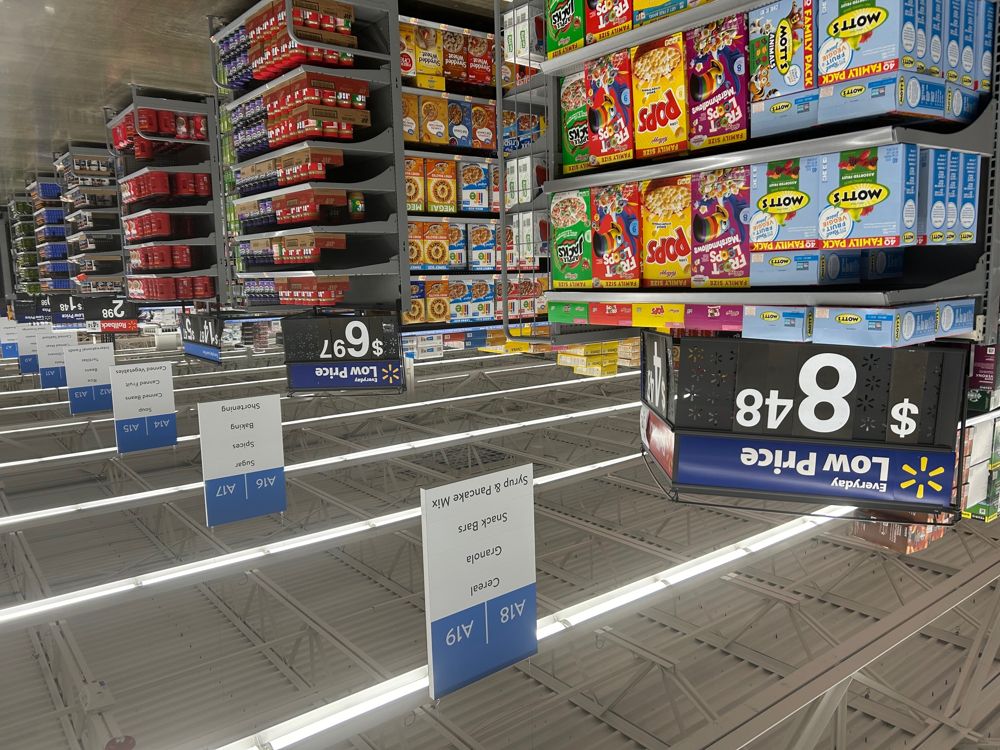

CORPORATE LIFE vs STORE LIFE

Remember that expression, one hand washes the other? Well, it's true and it definately relates to life as a graphic designer working in a corporate setting vs life as a personal shopper working in an actual store like Walmart.
In March of 2024, I won the 2nd Shift Associate of the Month Award.
From Managers Vote,
Walmart in Hackettstown, NJ,
Store Number 2503
I worked 11am-8pm shift


I have experienced both wonderful worlds first hand successfully. What's the command denominator to both? It's Advertising or Sales. Both areas want to sell the product. At A&P, Shoppers and Clark Printing (explained in later pages), I worked in a corporate setting designing store circulars where I placed a box of cereal, for example, on a grocery page. At ShopRite and now Walmart, I found that same item or box of cereal instore in the appropriate aisle. (above)